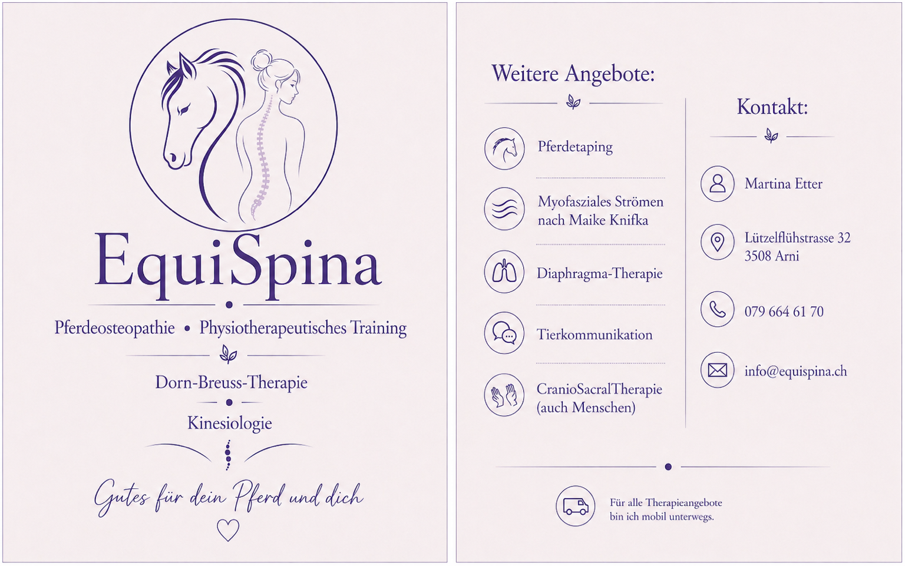

Mein Name ist Martina Etter.
Seit klein begleitet mich die Leidenschaft für Pferde. Mich fasziniert ihre Bewegung und ihr Körper – und wie fein alles zusammenspielt.
Durch eigene Pferde und deren Probleme habe ich die Osteopathie entdeckt. Gleichzeitig haben mich eigene körperliche Blockaden zur Dorn-Breuss-Therapie geführt.
Heute verbinde ich diese Ansätze, um Pferd und Mensch ganzheitlich zu begleiten.
Martina Etter
Lützelflühstrasse 32
3508 Arni
079 664 61 70
info@equispina.ch